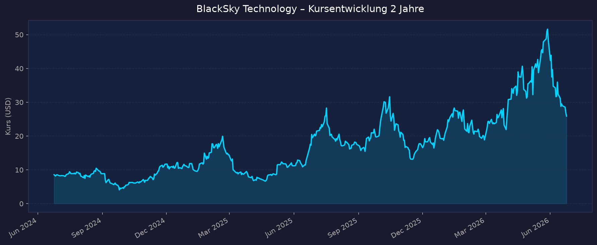
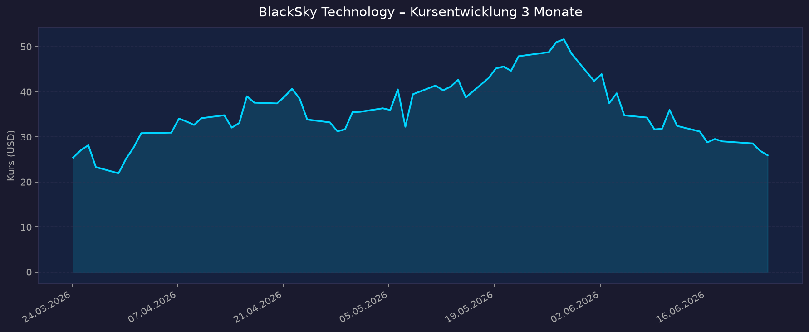

Einordnung Weltraum-Sektor: Direkter Pure-Play für Geospatial Intelligence — Echtzeit-Satellitenbilder + KI-gestützte Analytik über die eigene Gen-3-Konstellation (Low Earth Orbit). Defizitär → KGV n/a, Fokus auf P/S, Umsatzwachstum, Cash-Runway, Verwässerung und Regierungs-/Defense-Aufträge.
📈 1. Kursentwicklung
Aktueller Kurs: ~25,90–26,01 USD | Veränderung heute: ca. −3,3 %
Chart – 2 Jahre

Chart – 3 Monate

| Zeitraum | Kurs Start | Kurs Ende | Veränderung |
|---|---|---|---|
| 2 Jahre | ~7 USD (Mitte 2024) | ~26 USD | ca. +270 % |
| 3 Monate | ~40–45 USD (Hoch im Frühjahr) | ~26 USD | deutlicher Rücksetzer |
| 52-Wochen-Hoch | — | 52,88 USD | — |
| 52-Wochen-Tief | — | 12,41 USD | — |
Interaktiv: https://www.tradingview.com/symbols/NYSE-BKSY/
Hinweis: Sehr hohe Volatilität (Beta 2,52). Nach dem 52-Wochen-Hoch von 52,88 USD kam es zu einem kräftigen Rücksetzer — u. a. im Umfeld des SpaceX-Börsengangs (12.06.2026), der bei kleineren Pure-Plays Gewinnmitnahmen ausgelöst hat. YTD trotzdem klar positiv (+~38 %).
💹 2. KGV-Entwicklung (Kurs-Gewinn-Verhältnis)
Aktuelles KGV: n/a — defizitär
| Zeitraum | KGV | Einordnung |
|---|---|---|
| Aktuell | n/a — defizitär | Nettoverlust, kein positives Ergebnis |
| Forward P/E | −47,5 (negativ) | Verlust auch auf Forward-Basis erwartet |
| EPS (TTM) | −2,50 USD | FY2025 Nettoverlust −70,3 Mio USD (−2,09 USD/Aktie) |
Bewertung: Klassischer defizitärer Wachstums-Pure-Play. Eine KGV-Bewertung ist nicht sinnvoll — Bewertung erfolgt über P/S, EV/Sales, Umsatzwachstum und Auftragsbestand (siehe unten). Wichtig: 2025 war das zweite Jahr in Folge mit positivem adjustiertem EBITDA (FY2025: +0,9 Mio USD) — operativ nähert sich das Unternehmen der Profitabilität, der GAAP-Nettoverlust bleibt aber hoch (u. a. Abschreibungen Gen-3, Zinsen).
💰 3. Sales Multiple (Kurs-Umsatz-Verhältnis / P/S)
Aktuelles P/S-Verhältnis: ~9,8 (TTM-Umsatz 97,8 Mio USD; auf FY2025-Umsatz 106,6 Mio USD ≈ 9,0)
| Zeitraum | P/S Ratio | Einordnung |
|---|---|---|
| Aktuell | ~9,8 | erhöht, aber für defizitären Space-Pure-Play moderat |
| zum 52-W-Hoch (52,88 USD) | ~18–20 | bei Hoch deutlich überdehnt |
| historischer Verlauf 2024 | niedriger (Kurs damals ~5–8 USD) | exakte Macrotrends-Reihe nicht abrufbar (HTTP 402) |
Trend: P/S hat sich mit dem Kursanstieg 2025/26 stark ausgeweitet und nach dem Rücksetzer wieder auf ~9–10 normalisiert. Einordnung im Sektor: sehr günstig im Vergleich zu anderen Space-Pure-Plays — Rocket Lab (~123x P/S) und AST SpaceMobile (~409x P/S) liegen um ein Vielfaches höher; sogar SpaceX (SPCX) handelt bei ~104x. BlackSky ist damit einer der am moderatesten bewerteten reinen Weltraumwerte gemessen am Umsatz.
Hinweis: Vollständige historische P/S-Reihe von Macrotrends war nicht abrufbar (Paywall/HTTP 402) — Werte teils approximiert.
📊 4. Handelsvolumen (Trading Volume)
| Zeitraum | Ø Tagesvolumen | Auffälligkeiten |
|---|---|---|
| 3-Monats-Durchschnitt | ~2,33 Mio Aktien | erhöht durch hohe Volatilität |
| 10-Tage-Durchschnitt | ~2,33 Mio Aktien | stabil hohes Niveau |
| 2-Jahres-Durchschnitt | nicht exakt verfügbar | Spitzen rund um Earnings & Gen-3-Meilensteine |
Volumentrend: Anhaltend hohes Interesse — getrieben durch Earnings, Gen-3-Launches, Contract-News und das spekulative Umfeld um den SpaceX-IPO. Bei nur ~37 Mio ausstehenden Aktien sorgt das hohe Volumen für starke Kursausschläge.
🏦 5. Insider Trades (letzte 2 Jahre)
| Datum | Name | Funktion | Kauf/Verkauf | Anzahl Aktien | Wert (USD) |
|---|---|---|---|---|---|
| 10.09.2025 | Brian E. O'Toole | CEO | Verkauf | 33.292 | ~580.945 |
| 10.09.2025 | Henry E. Dubois | CFO | Verkauf | 31.646 | ~552.223 |
| 10.09.2025 | Christiana L. Lin | CAO/General Counsel | Verkauf | 24.036 | ~419.428 |
| 10.09.2025 | Tracy Ward | SVP | Verkauf | 720 | ~12.564 |
3-Monats-Überblick: Ausschließlich Verkäufe, keine Käufe (zuletzt zusätzlich ~721k USD verkauft). 2-Jahres-Überblick: Insider haben in 24 Monaten ~175.142 Aktien (~2,26 Mio USD) verkauft, ohne einen einzigen Insider-Kauf. Das ist ein klar negatives Signal — wenngleich bei jungen Wachstumsfirmen oft Steuer-/Vesting-bedingt. Insider-Ownership wird je nach Quelle mit 3,8 % (MarketBeat, ohne Großaktionäre) bis 14,9 % (Finviz) angegeben.
Quelle: MarketBeat / Finviz (OpenInsider war nicht erreichbar)
🩳 6. Short-Positionen
Aktuelle Short Quote: 24,06 % des Streubesitzes (Float) — sehr hoch | Short Interest ~7,59 Mio Aktien | Short Ratio (Days-to-Cover) 3,26
| Zeitraum | Short Interest | Veränderung |
|---|---|---|
| Aktuell | ~24 % des Float | sehr hoch |
| Verlauf 12–24 Monate | exakte Reihe nicht verfügbar | strukturell hoch bei volatilen Space-Pure-Plays |
Einschätzung: Mit ~24 % Short-Float ist BKSY stark leerverkauft — deutlich über dem Marktdurchschnitt. Das birgt zwei Seiten: hohes Short-Squeeze-Potenzial bei positiven Katalysatoren (Gen-3-Erfolg, große Defense-Aufträge), aber auch erhebliche Skepsis des Marktes gegenüber Bewertung, Cash-Burn und Verwässerungsrisiko.
🗞️ 7. Aktuelle Nachrichten
| Datum | Quelle | Nachricht | Relevanz |
|---|---|---|---|
| Juni 2026 | Investing.com | Canaccord bestätigt Buy, Kursziel 27 USD nach neuem Gen-3-Contract-Win | Hoch |
| Juni 2026 | Simply Wall St | BlackSky sichert >240 Mio USD überwiegend internationale Gen-3-Satellitenverträge | Hoch |
| Juni 2026 | Simply Wall St | Mehrere 7-stellige Verträge mit neuem internationalem Defense-Kunden für „Gen-3 Assured" | Hoch |
| Juni 2026 | div. | 3 neue Gen-3-Satelliten im LEO; Revisit-Rate Richtung ~60 Min; alle 12 Gen-3 bis Ende 2026 geplant | Hoch |
| Juni 2026 | Jefferies | Coverage-Initiierung mit Buy, Kursziel 23 USD (einzigartiges Imagery-Angebot, internationale Expansion) | Mittel |
| 12.06.2026 | Markt | SpaceX-IPO (SPCX) ~1,77 Bio USD — Sektor-Hype + Rücksetzer bei kleineren Pure-Plays | Mittel |
| 07.05.2026 | Investing.com | Q1-2026-Earnings: starkes Wachstum, aber Aktie −9,4 % vorbörslich | Mittel |
| 26.02.2026 | Globe and Mail | FY2025: Rekordumsatz 106,6 Mio USD, wachsender Backlog | Mittel |
| lfd. | div. Analysten | Konsens „Strong Buy" (6 Analysten), Ø-Kursziel ~40,5 USD (~+40 % Upside) | Mittel |
Sentiment: Überwiegend positiv auf operativer/analytischer Ebene (Strong Buy, mehrere Buy-Reiterierungen, große Auftragsgewinne), aber kurzfristig nervös — Kurs reagiert trotz guter Zahlen mit Rücksetzern, da Bewertung, Budgetunsicherheit (US-Regierung) und Verwässerung im Fokus stehen.
📋 8. Letzte 3 Quartalsberichte
Q1 2026 (Quartal bis 31.03.2026, gemeldet 07.05.2026)
| Kennzahl | Ist | Erwartung | Abweichung |
|---|---|---|---|
| Umsatz (Revenue) | 20,8 Mio USD | ~Konsens nicht exakt | Space-/AI-Services-Umsatz +14 % q/q |
| EPS | negativ (Verlust) | — | — |
| Adj. EBITDA | −5,1 Mio USD | im Rahmen der Erwartung | — |
| Backlog | 351 Mio USD (≈380 Mio inkl. Post-Quarter) | — | — |
Guidance: FY2026-Umsatzprognose angehoben auf 130–150 Mio USD; Gen-3-Umsatz soll 2026 um >50 % wachsen, Ziel ~100 Mio USD Run-Rate bei ~80 % Bruttomarge. ~90 Mio USD des Backlogs für 2026 als Umsatz erwartet. Neue Verträge bis zu 160 Mio USD im Quartal gewonnen. Kursreaktion: ca. −9,4 % vorbörslich trotz guter Zahlen.
Q4 2025 (Quartal bis 31.12.2025, gemeldet 26.02.2026)
| Kennzahl | Ist | Erwartung | Abweichung |
|---|---|---|---|
| Umsatz (Revenue) | 35,2 Mio USD | — | +16 % j/j |
| Nettoverlust | −0,9 Mio USD | — | stark verbessert (Vorjahr −19,4 Mio) |
| Adj. EBITDA | +8,8 Mio USD | — | deutlich positiv |
| Backlog | 345 Mio USD | — | +32 % j/j |
Guidance: FY2025-Rekordumsatz 106,6 Mio USD; zweites Jahr in Folge mit positivem adj. EBITDA; starke internationale Defense- und Subscription-Nachfrage als Treiber. Kursreaktion: gemischt — operativ stark, aber FY-Nettoverlust 2025 auf −70,3 Mio USD ausgeweitet.
Q3 2025 (Quartal bis 30.09.2025)
| Kennzahl | Ist | Erwartung | Abweichung |
|---|---|---|---|
| Umsatz (Revenue) | 19,6 Mio USD | verfehlt | Revenue-Miss durch EOCL-Reduktion (NRO) + US-Budgetunsicherheit |
| Adj. EBITDA | −4,5 Mio USD | — | Vorjahr +0,7 Mio |
| Neue Aufträge | >60 Mio USD | — | — |
| Backlog | 322,7 Mio USD (~91 % international) | — | — |
Guidance: Fokusverschiebung auf internationale Defense-Aufträge, um Rückgang im US-Commercial-Layer-(EOCL)-Vertrag mit der NRO zu kompensieren. Kursreaktion: Aktie nach Zahlen rund −20 % (Revenue-Miss).
Umsatz-Muster: Stark schwankend (Q3 19,6 → Q4 35,2 → Q1 20,8 Mio) — typisch projekt-/meilensteingetrieben. Q4 traditionell stark; das Wachstum hängt entscheidend am Hochlauf der Gen-3-Konstellation und an internationalen Defense-Verträgen.
🌍 9. Marktkontext & Wettbewerb
Markt / Branche: Commercial Satellite Imaging / Geospatial Intelligence & Earth Observation. Marktgröße 2026 ca. 7,5 Mrd USD (Commercial Satellite Imaging), strukturelles Wachstum durch Defense-Nachfrage, KI-Analytik und höhere Revisit-Anforderungen.
| Wettbewerber | Stärke | Schwäche |
|---|---|---|
| Maxar / Airbus DS | Tier-1, sehr hochauflösend, tiefe Regierungsverträge, proprietäre Bodennetze | hohe Kostenbasis, weniger agil, längere Revisit-Zyklen |
| Planet Labs (PL) | größte Flotte, tägliche globale Abdeckung, Daten-/Abo-Modell | niedrigere Auflösung, ebenfalls defizitär |
| BlackSky (BKSY) | Echtzeit-Tasking, hohe Revisit-Rate (Gen-3, ~60 Min), KI-Analytik, starkes internationales Defense-Geschäft | klein (Tier 2), defizitär, US-Budgetabhängigkeit (EOCL/NRO), Verwässerung |
| ICEYE / Capella / Umbra | SAR (Radar, wetter-/nachtunabhängig) | andere Technologie, teils private Player |
| Satellogic / ImageSat | Tier-2-Konkurrenz, Kostenfokus | Skala/Finanzierung |
Branchentrends:
- Defense-getriebene Nachfrage (geopolitische Spannungen) — internationale Verträge sind der Haupttreiber für BlackSky (Backlog zu ~90 % international).
- KI + Echtzeit: Verschiebung vom reinen Bilderverkauf hin zu KI-Analytik und „Tasking on Demand" — BlackSkys Kernstrategie (Gen-3 + Analytik-Plattform Spectra AI).
- Sektor-Hype 2026: Der SpaceX-IPO (SPCX, 12.06.2026, ~1,77 Bio USD) hat den Space-Sektor befeuert, danach aber bei kleineren Pure-Plays Gewinnmitnahmen/Rücksetzer ausgelöst — auch BKSY kam vom Hoch deutlich zurück.
Marktposition: Etablierter Tier-2-Nischen-Champion für hochfrequente Echtzeit-Erdbeobachtung; technologisch mit Gen-3 (sub-meter-Auflösung, kurze Revisit) wettbewerbsfähig, aber als Small Cap finanziell verwundbar gegenüber Tier-1-Riesen. Risiken aus dem Marktumfeld: Abhängigkeit von US-Regierungsbudgets (EOCL/NRO-Reduktion bereits sichtbar), Konkurrenz durch besser kapitalisierte Incumbents, Verwässerung zur Finanzierung des Gen-3-Hochlaufs, hohe Bewertung relativ zu Umsatzgröße.
🧮 Bewertungs-Score
| Kriterium | Score (1–10) | Begründung |
|---|---|---|
| Bewertung | 6,5 | P/S ~9,8 — für einen Space-Pure-Play moderat (Peers Rocket Lab ~123x, AST ~409x). KGV n/a (defizitär). EV erhöht durch Nettoschuld (~211 Mio Debt vs. ~116 Mio Cash). |
| Wachstum & Momentum | 6,5 | Gen-3-Umsatz +>50 % Ziel, Backlog ~380 Mio, FY-Guidance angehoben — aber Umsatz schwankt stark und reagierte zuletzt mit Kursrücksetzern; Kursmomentum nach Hoch negativ. |
| Bilanz & Sicherheit | 4,0 | Cash ~116 Mio vs. Debt ~211 Mio; weiter Cash-Burn (adj. EBITDA Q1 −5,1 Mio). Verwässerungsrisiko real (Kapitalbedarf für 12-Satelliten-Hochlauf). Runway begrenzt → Finanzierungsbedarf wahrscheinlich. |
| Qualität & Wettbewerbsposition | 6,5 | Technologisch stark (Echtzeit/Revisit/KI), wachsender internationaler Defense-Backlog; aber Tier-2, US-Budgetabhängig, noch nicht GAAP-profitabel. |
| Chancen vs. Risiken | 6,0 | Katalysatoren: Gen-3-Vollausbau bis Ende 2026, Defense-Aufträge, Short-Squeeze-Potenzial (24 % Float). Risiken: Verwässerung, Budgetkürzungen, nur Insider-Verkäufe. |
Gewichteter Gesamtscore: 5,9 / 10 (Gewichtung: Bewertung 20 %, Wachstum 25 %, Bilanz 20 %, Qualität 20 %, Chancen/Risiken 15 % → 6,5·0,2 + 6,5·0,25 + 4,0·0,2 + 6,5·0,2 + 6,0·0,15 = 5,9)
5-Jahres-Szenario
Annahmen: kein Dividende (defizitär). Basis heute ~26 USD. Treiber = Gen-3-Umsatzhochlauf, internationale Defense-Aufträge, Erreichen GAAP-Profitabilität, Verwässerungsgrad.
| Szenario | Annahmen | Kurs 2031 | Gesamtrendite ggü. heute |
|---|---|---|---|
| Bär | Gen-3-Hochlauf verzögert, US-Budgetkürzungen, starke Verwässerung/Kapitalrunde, P/S komprimiert | ~10 USD | ca. −60 % |
| Base | Umsatz wächst Richtung 250–350 Mio USD bis 2031, adj. EBITDA klar positiv, GAAP nahe Break-even, P/S normalisiert ~6–8 | ~40–45 USD | ca. +55 bis +75 % |
| Bull | Gen-3 + AROS voll skaliert, Umsatz >450 Mio USD, GAAP-profitabel, Marktführer-Premium, Defense-Aufträge boomen | ~75–90 USD | ca. +190 bis +245 % |
Hohe Spannweite spiegelt das typische Pure-Play-Risiko wider: zwischen Profitabilität-Durchbruch und Verwässerungs-/Budget-Falle.
📝 Gesamteinschätzung
Stärken:
- Technologisch starker Echtzeit-Pure-Play (Gen-3: sub-meter, Revisit ~60 Min, KI-Analytik Spectra AI)
- Wachsender, zu ~90 % internationaler Defense-Backlog (~380 Mio USD) + angehobene FY2026-Guidance
- Zwei Jahre in Folge positives adj. EBITDA — operativer Pfad Richtung Profitabilität
- Im Sektorvergleich moderat bewertet (P/S ~9,8 vs. Rocket Lab ~123x, AST ~409x)
- Analystenkonsens „Strong Buy", Ø-Kursziel ~40,5 USD; hoher Short-Float (24 %) → Squeeze-Potenzial
Risiken:
- Weiterhin GAAP-defizitär (FY2025 −70,3 Mio USD), anhaltender Cash-Burn
- Verwässerungsrisiko zur Finanzierung des 12-Satelliten-Gen-3-Hochlaufs; Cash (~116 Mio) < Debt (~211 Mio)
- Hohe Abhängigkeit von US-Regierungsbudgets (EOCL/NRO-Reduktion bereits umsatzwirksam)
- Nur Insider-Verkäufe, keine Käufe (24 Monate) — schwaches Vertrauenssignal
- Extrem volatil (Beta 2,52); stark schwankender Quartalsumsatz; Sektor-Rücksetzer nach SpaceX-IPO
Fazit: BlackSky ist ein technologisch gut positionierter, im Peer-Vergleich relativ günstig bewerteter Geospatial-Intelligence-Pure-Play mit wachsendem internationalem Defense-Backlog und sichtbarem Pfad Richtung operativer Profitabilität. Dem stehen ein anhaltender GAAP-Verlust, ein begrenzter Cash-Runway mit realem Verwässerungsrisiko, hohe Budgetabhängigkeit und ausschließlich Insider-Verkäufe gegenüber. Eine spekulative Wachstumsaktie mit asymmetrischem Chance-Risiko-Profil — der hohe Short-Float verschärft die Bewegungen in beide Richtungen.
Datenquellen: Yahoo Finance · stockanalysis.com · Finviz · MarketBeat · Macrotrends · SEC Edgar (8-K) · ir.blacksky.com · Investing.com · Simply Wall St · Globe and Mail · CNBC · Mordor/Spherical Market Insights Datenstand 2026-06-24. Einzelne Werte (P/S-Historie, Short-Verlauf, OpenInsider) waren nicht vollständig abrufbar und entsprechend mit „nicht verfügbar"/approximiert gekennzeichnet. Keine Anlageberatung — rein informative Auswertung öffentlicher Daten.